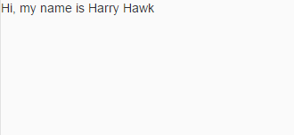

Step 3: Create Property Binding
Although there is no visible difference, the text on the screen is now derived from model data.
Preview

Screen with text derived from various sources (No visual changes to last step)Coding
You can view and download all files in the Demo Kit at Data Binding - Step 3.
webapp/index.js
sap.ui.require([
"sap/m/Text",
"sap/ui/model/json/JSONModel"
], function (Text, JSONModel) {
"use strict";
// Attach an anonymous function to the SAPUI5 'init' event
sap.ui.getCore().attachInit(function () {
// Create a JSON model from an object literal
var oModel = new JSONModel({
greetingText: "Hi, my name is Harry Hawk"
});
// Assign the model object to the SAPUI5 core
sap.ui.getCore().setModel(oModel);
// Display a text element whose text is derived
// from the model object
new Text({text: "{/greetingText}"}).placeAt("content");
});
});
The text property of the sap.m.Text control is set to the value {/greetingText}. The curly brackets enclosing a binding path (binding syntax) are automatically interpreted as a binding. These binding instances are called PropertyBindings. In this case, the control's text property is bound to the greetingText property at the root of the default model, as the slash (/) at the beginning of the binding path denotes an absolute binding path.